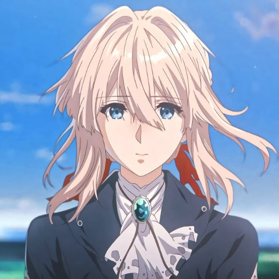
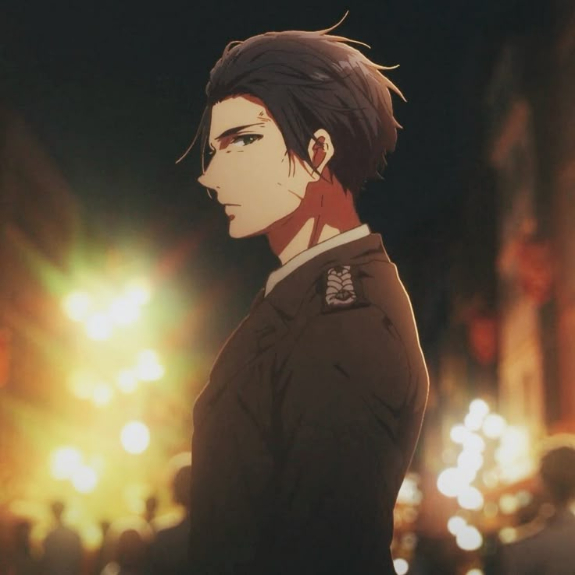
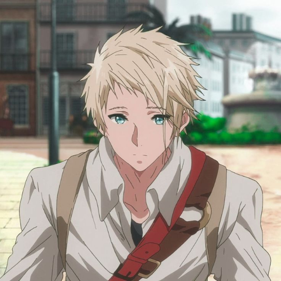
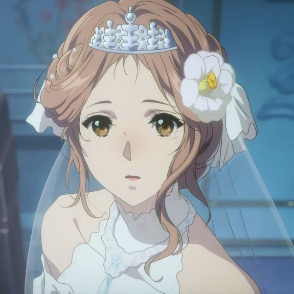

-
Violet Evergarden
Violet Evergarden, uma ex-soldado que, após perder os braços e suas memórias na guerra, se torna uma Boneca Autónoma de Automemórias, escrevendo cartas para aqueles que não conseguem expressar seus sentimentos. Ela busca entender o significado das palavras "Amo-te", ditas por Gilbert, seu superior, antes de se separar dele. Ao longo de sua jornada, Violet aprende sobre o amor e seus próprios sentimentos por Gilbert.
-
Gilbert Bougainvillea
"Gilbert é um major do Exército de Leidenschaftlich, originário de uma família aristocrática, com um passado e uma formação marcados pela disciplina militar. Ele sempre demonstrou um senso de dever e honra, características típicas de sua linhagem nobre, mas também carregava uma profunda humanidade e afeto, especialmente em relação a Violet. Ao longo de sua relação com ela, Gilbert desenvolveu um laço inquebrável, cuidando dela como se fosse sua própria irmã, sendo uma figura de proteção e carinho em sua vida. Ele valorizava Violet mais do que qualquer outra coisa, considerando-a não apenas uma soldado, mas uma pessoa preciosa. Sua morte, trágica e inesperada, deixou um vazio profundo na vida de Violet. Antes de partir, as suas últimas palavras para ela foram "amo-te", um gesto de ternura e devoção que, embora breves, transformaram profundamente o destino de Violet.
-
Benedict Blue
Benedict é um carteiro dedicado que trabalha na Companhia Postal CH, sendo um dos primeiros funcionários a se juntar à organização. Juntamente com Cattleya, ele faz parte da fundação da companhia e desempenha um papel essencial no serviço de entrega de cartas. Embora ambos compartilhem um vínculo de amizade, sua relação é frequentemente marcada por discussões e brincadeiras, o que cria uma dinâmica divertida e, ao mesmo tempo, calorosa entre eles. Essas interações muitas vezes ajudam a suavizar os momentos mais sérios dentro da história e servem como alívio cômico. Juntos, eles colaboram com outros membros da Companhia Postal CH, oferecendo suporte a Violet e a outros personagens, enquanto lidam com os desafios diários de um trabalho que, mais do que uma simples tarefa, carrega uma profunda carga emocional.
-
Charlotte Eberfreya
Charlotte Eberfreya é uma princesa gentil e amável em Violet Evergarden. Ela aparece em um episódio onde pede a ajuda de Violet para escrever uma carta expressando seus sentimentos por seu amado, enfrentando dificuldades em encontrar as palavras certas. Ela admira Violet pela sua força e determinação.